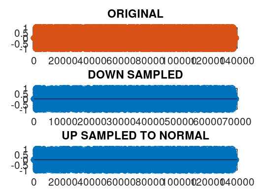

% UP DOWN SAMPLING %DOWN SAMPLING clc, clear, clf; %X = [1 2 3 4 5 6 5 4 3 2 1 0 1 2 3 4 5 6 5 4 3 2 1 0 1 2 3 4 5 6 5 4 3 2 1 0 ]; %TAKE INPUT FROM AUDIO FILE [X, Fs] = audioread('song8k.wav'); N1 = length(X) for n= 1:1:(N1/2) y(n) = X(2*n); endfor N2 = length(y) %UP CYCLING for n= 2:2:(N2*2) z(n) = y(n/2); endfor %plotting subplot(3,1,1), stem(X), title('ORIGINAL') subplot(3,1,2), stem(y), title('DOWN SAMPLED') subplot(3,1,3), stem(z), title('UP SAMPLED TO NORMAL') %output to file using audiowrite
N1 = 138816 N2 = 69408